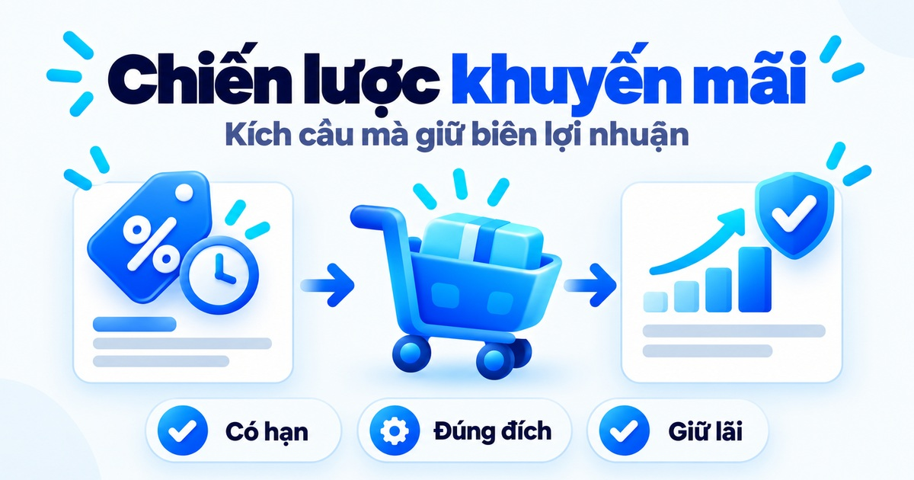
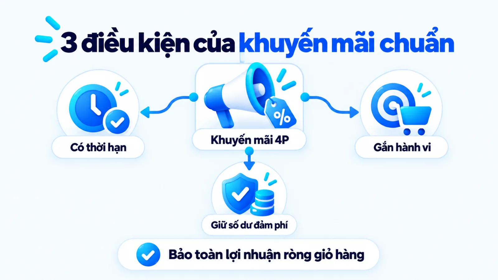
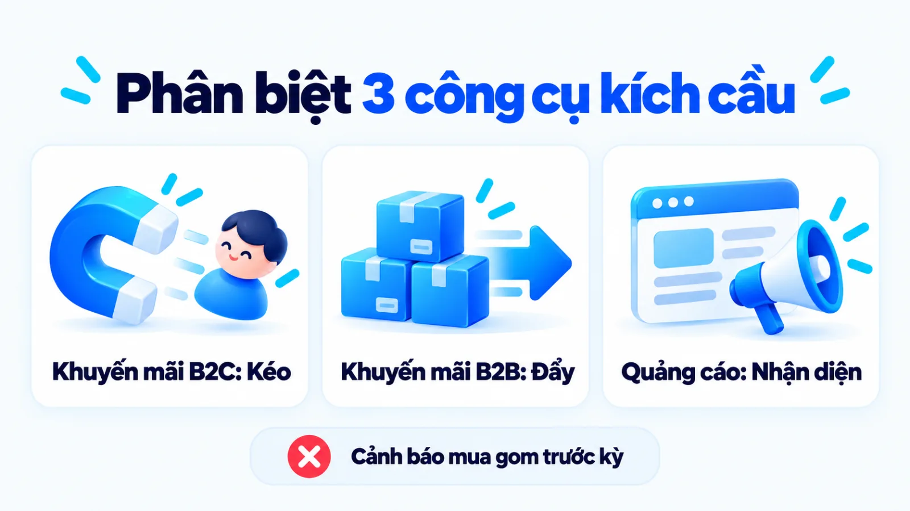
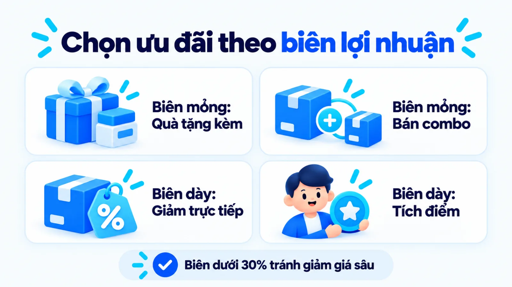
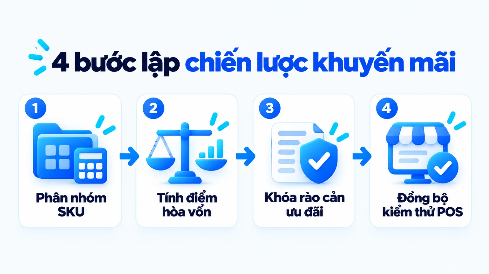
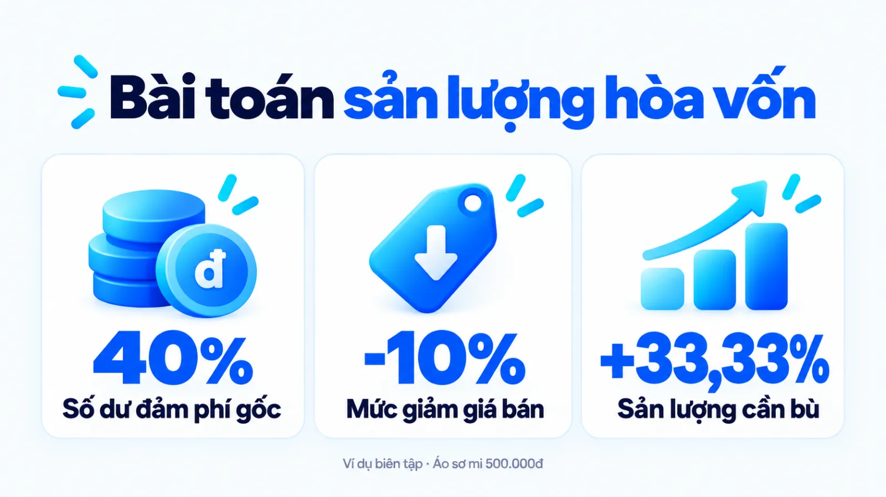
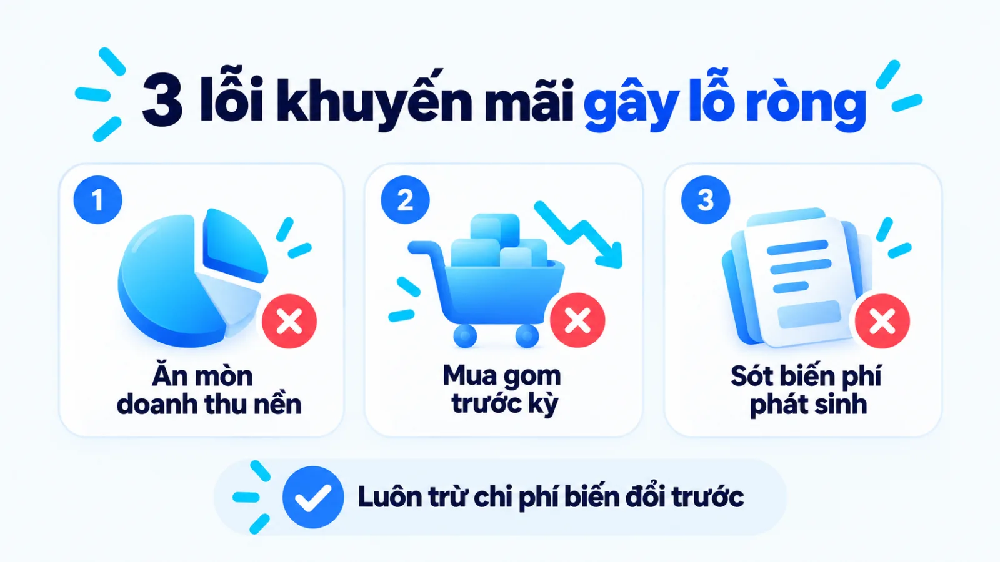
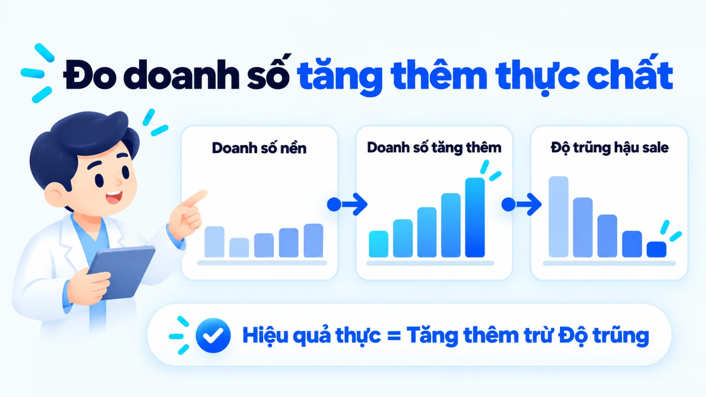

Chiến lược khuyến mãi trong marketing là gì?
Chiến lược khuyến mãi trong marketing là kế hoạch thiết kế, phân bổ và kiểm soát các ưu đãi có thời hạn nhằm thúc đẩy khách hàng mua sớm hơn, mua nhiều hơn hoặc thuyết phục trung gian đẩy hàng mà vẫn bảo toàn lợi nhuận ròng. Với doanh nghiệp vừa và nhỏ, mỗi quyết định cắt giảm giá bán hay tặng kèm quà đều tác động trực tiếp vào số dư đảm phí của từng đơn hàng và định vị giá trong tâm trí người mua. Khi tung ưu đãi tự phát theo đối thủ mà chưa tính ngưỡng sản lượng cần bù, cửa hàng rất dễ rơi vào cảnh đơn hàng tăng vọt trong vài ngày nhưng tổng lợi nhuận cuối kỳ lại âm do chi phí vận hành và hiện tượng khách quen mua gom tích trữ. Tôi là Lê Tuấn Việt, Marketing Leader tại TAKI Group. Trong bài viết này, tôi phân tích cơ chế vận hành của từng nhóm ưu đãi, tiêu chí chọn hình thức khuyến mãi theo biên lợi nhuận gộp và cách đo doanh số tăng thêm thực chất.
- Đăng ngày
- Cập nhật

Tóm tắt nhanh
- Chiến lược khuyến mãi trong marketing chỉ phát huy tác dụng khi hội đủ ba điều kiện: giới hạn thời gian rõ ràng, gắn với một hành vi mua cụ thể và bảo toàn tổng số dư đảm phí trên toàn giỏ hàng.
- Doanh nghiệp có biên lợi nhuận gộp mỏng nên ưu tiên cơ chế tặng kèm sản phẩm tự sản xuất hoặc đặt ngưỡng giá trị đơn hàng tối thiểu thay vì giảm giá trực tiếp trên từng sản phẩm.
- Trước khi duyệt mức chiết khấu, người phụ trách cần tính tỷ lệ sản lượng phải tăng thêm để bù đắp phần biên lợi nhuận bị cắt giảm, đồng thời cộng đủ chi phí đóng gói, vận chuyển và phí sàn.
- Hiệu quả khuyến mãi thực chất phải được đo bằng lợi nhuận ròng tăng thêm và tỷ lệ khách mới quay lại mua ở mức giá bình thường sau khi đã trừ phần doanh số mua gom trước kỳ.
Mục lục bài viết8 phần
Chiến lược khuyến mãi trong marketing là gì?
Chiến lược khuyến mãi trong marketing (Sales Promotion Strategy) là kế hoạch thiết kế, phân bổ và kiểm soát các ưu đãi có thời hạn thuộc nhóm xúc tiến (Promotion) trong Marketing Mix (hỗn hợp tiếp thị) nhằm thúc đẩy khách hàng mua sớm hơn, mua nhiều hơn hoặc thuyết phục trung gian đẩy hàng mà vẫn bảo toàn điểm hòa vốn trên toàn giỏ hàng.
Trong khung lý thuyết Marketing Mix kinh điển, tài liệu tổng hợp về khuyến mãi trên Wikipedia xác định hoạt động này tạo lực đẩy trong một khoảng thời gian giới hạn định trước để kích thích nhu cầu thị trường hoặc cải thiện độ sẵn có của sản phẩm trên kệ hàng. Khác với chính sách giảm giá dài hạn làm thay đổi định vị giá (Price), khuyến mãi chỉ mượn ưu đãi ngắn hạn rồi quay về giá niêm yết ban đầu.

Tại Việt Nam, người làm nghề cần tách biệt khuyến mãi (ưu đãi kích cầu người mua cuối) và khuyến mại (thuật ngữ pháp lý chỉ hoạt động xúc tiến thương mại). Theo Điều 6 và Điều 7 Nghị định 81/2018/NĐ-CP do Chính phủ Việt Nam ban hành năm 2018 áp dụng tại Việt Nam, hạn mức giá trị khuyến mại và mức giảm giá tối đa trong chương trình thông thường không được vượt quá 50% giá bán ngay trước thời gian khuyến mại.
Ở các SME (doanh nghiệp vừa và nhỏ), nhiều chủ tiệm nhầm giữa chiến lược khuyến mãi có tính toán với phản xạ giảm giá tự phát khi doanh số chững lại. Điểm tôi muốn làm rõ là giảm giá tự phát chỉ nhìn vào lượng đơn bề nổi, còn chiến lược khuyến mãi luôn tính ngược từ số dư đảm phí để bảo toàn tiền lãi sau khi trừ biến phí và đóng gói thành một chiến dịch marketing có hạn chót.
Ba điều kiện của một chiến lược khuyến mãi đúng
Một đợt tung ưu đãi chỉ thực sự trở thành chiến lược khuyến mãi có kiểm soát khi đáp ứng đồng thời ba điều kiện nền tảng dưới đây:
- Giới hạn thời gian hoặc số lượng rõ ràng: Chương trình phải có mốc đóng ưu đãi hoặc giới hạn số suất cụ thể để tạo động lực hành động ngay và bảo vệ mức giá neo (Reference Price) sau khi kết thúc đợt bán.
- Gắn với một hành vi mục tiêu đo được: Mỗi ưu đãi chỉ phục vụ một nhiệm vụ cụ thể như kích thích khách mới dùng thử, nâng giá trị giỏ hàng trung bình hoặc giải phóng một nhóm mã hàng tồn kho chậm luân chuyển.
- Bảo toàn tổng số dư đảm phí của giỏ hàng: Phần biên lợi nhuận nhường cho khách ở sản phẩm mồi phải được bù đắp bằng sản lượng tăng thêm hoặc biên lợi nhuận của sản phẩm bán chéo đi kèm.
Phân biệt khuyến mãi, quảng cáo và chiết khấu
Khuyến mãi người tiêu dùng, khuyến mãi thương mại và quảng cáo khác nhau ở đối tượng nhận lợi ích, độ trễ chuyển đổi và cách hạch toán vào biên lợi nhuận của doanh nghiệp. Xác định rõ ranh giới giữa ba công cụ này giúp người lập kế hoạch phân bổ ngân sách đúng điểm nghẽn thay vì dùng giảm giá để chữa lỗi thiếu nhận diện.
Theo tài liệu hướng dẫn đo lường hiệu quả khuyến mãi ngành bán lẻ toàn cầu công bố năm 2022 của NielsenIQ, khuyến mãi thương mại (Trade Promotion) thực chất là hoạt động tiếp thị B2B (mô hình kinh doanh giữa doanh nghiệp với doanh nghiệp) nhắm tới nhà phân phối và điểm bán lẻ; trong khi đó, khuyến mãi người tiêu dùng (Consumer Promotion) là hoạt động tiếp thị B2C (mô hình kinh doanh hướng tới người tiêu dùng cá nhân).
Ngược lại, quảng cáo (Advertising) xây dựng lý do lý tính và cảm xúc để khách hàng chọn thương hiệu trong dài hạn, còn khuyến mãi tạo động lực tài chính trực tiếp để thúc đẩy giao dịch ngay hôm nay. Trong một kế hoạch marketing tổng thể, hai công cụ này bổ trợ nhưng không thay thế nhau. Bảng dưới đây đối chiếu khuyến mãi B2C với khuyến mãi thương mại B2B và quảng cáo theo bốn tiêu chí quản trị.
| Tiêu chí | Khuyến mãi người tiêu dùng B2C | Khuyến mãi B2B và Quảng cáo |
|---|---|---|
| Đối tượng đích | Người mua cuối tại cửa hàng, website hoặc sàn thương mại | Đại lý, nhà phân phối, điểm bán lẻ và công chúng mục tiêu |
| Mục tiêu chính | Kích thích khách dùng thử, mua sớm hơn hoặc tăng giỏ hàng | Mở rộng độ phủ kệ hàng đại lý và xây dựng uy tín thương hiệu |
| Cơ chế thúc đẩy | Giảm giá ngắn hạn, tặng quà kèm, hoàn tiền hoặc bán combo | Chiết khấu sản lượng, thưởng trưng bày và phát thông điệp |
| Rủi ro tài chính | Tạo thói quen chờ giảm giá và làm giảm giá trị thương hiệu | Đại lý mua gom tích trữ làm lệch dự báo sản xuất hàng hóa |
Bảng đối chiếu trên áp dụng cho doanh nghiệp sản xuất và bán lẻ đa kênh; khi hạch toán, khoản chiết khấu thương mại theo hợp đồng cố định cần được tách khỏi ngân sách khuyến mãi theo đợt để tránh làm sai lệch biên lợi nhuận gộp.

Một rủi ro lớn khi lạm dụng ưu đãi kênh phân phối là hiện tượng mua gom tích trữ (Forward Buying), khi đại lý gom hàng giá thấp để bán dần ở các kỳ sau. Theo nghiên cứu thị trường bán lẻ Hoa Kỳ đăng trên Harvard Business Review năm 1990, hiện tượng mua gom tích trữ này làm méo mó dự báo nhu cầu, đội chi phí tồn kho chuỗi cung ứng và khiến khoản chi khuyến mãi thương mại kém sinh lời.
Cách chọn hình thức khuyến mãi theo mục tiêu
Doanh nghiệp cần chọn hình thức khuyến mãi dựa trên hai biến số đầu vào là tỷ suất biên lợi nhuận gộp hiện tại và mục tiêu tồn kho, thay vì áp dụng một mức giảm giá phần trăm đồng loạt cho mọi mặt hàng. Năm hình thức khuyến mãi phổ biến dưới đây được chia vào hai nhóm cơ chế chính là ưu đãi kéo khách lẻ và ưu đãi đẩy kênh phân phối.
Người quản lý cần tách bạch hai cơ chế tác động vào lợi nhuận: giảm giá trực tiếp (Price Discount) cắt thẳng vào lãi ròng từng đơn vị, còn gia tăng giá trị tặng kèm (Value-added Promotion) giữ nguyên mức giá thu về nhưng tăng lượng hàng nhận được. Cách phối hợp đồng bộ giữa độ phủ điểm bán và kích cầu tiêu dùng thể hiện rất rõ trong chiến lược marketing của Coca-Cola tại thị trường đại chúng.
Nhóm ưu đãi kéo khách lẻ dùng thử và mua lặp lại
Nhóm ưu đãi kéo (Pull Promotion) tác động thẳng vào người tiêu dùng cuối để kéo họ tới điểm bán hoặc chốt đơn trực tuyến. Với mặt hàng có biên lợi nhuận gộp mỏng, tôi ưu tiên tặng kèm sản phẩm tự sản xuất hoặc bán theo bộ (Bundling) thay vì giảm giá trực tiếp. Khi tặng hàng tự sản xuất, khách cảm nhận giá trị theo giá bán lẻ niêm yết, còn doanh nghiệp chỉ tốn phần giá vốn sản xuất thấp hơn.
Tại Việt Nam, các thương hiệu vận hành theo mô hình D2C của Coolmate (bán hàng trực tiếp tới người tiêu dùng) thường ưu tiên bán theo tủ đồ hoặc gói sản phẩm thiết yếu để nâng giá trị giỏ hàng trung bình, qua đó giảm tỷ trọng chi phí đóng gói và vận chuyển trên từng đơn hàng.
Nhóm ưu đãi đẩy hàng qua đại lý và nhà phân phối
Nhóm ưu đãi đẩy (Push Promotion) tập trung giải bài toán dòng tiền và diện tích trưng bày tại hệ thống trung gian qua chiết khấu bậc sản lượng, hỗ trợ POSM (vật phẩm quảng cáo tại điểm bán) hoặc thưởng doanh số quý. Theo báo cáo phân tích ngành hàng tiêu dùng đóng gói (CPG) toàn cầu năm 2019 của McKinsey & Company dựa trên kiểm toán chi tiêu, các doanh nghiệp CPG toàn cầu đầu tư khoảng 20% tổng doanh thu hàng năm vào khuyến mãi thương mại.
Tại Việt Nam, theo khoản 2 Điều 7 sửa đổi tại Nghị định 128/2024/NĐ-CP do Chính phủ Việt Nam ban hành năm 2024 (hiệu lực từ ngày 01/12/2024 trên toàn quốc), hạn mức giảm giá tối đa 100% chỉ áp dụng cho chương trình khuyến mại tập trung do cơ quan nhà nước có thẩm quyền quyết định tổ chức. Bảng dưới đây phân loại năm hình thức khuyến mãi theo điều kiện phù hợp và sự đánh đổi.
| Hình thức | Phù hợp khi | Đánh đổi và rủi ro cần kiểm soát |
|---|---|---|
| Giảm giá trực tiếp | Cần xả nhanh hàng tồn cuối mùa, hàng cận hạn để thu hồi vốn | Cắt thẳng vào số dư đảm phí và dễ làm tụt mức giá neo chuẩn |
| Bán kèm combo | Có mã hàng chủ lực biên lãi cao ghép cùng sản phẩm phụ trợ | Giảm tỷ lệ chốt đơn nếu ghép sai cặp hàng lệch nhu cầu mua |
| Tặng quà kèm đơn | Biên lợi nhuận mỏng, cần giữ giá lẻ và có sẵn hàng tặng kèm | Tăng thêm chi phí đóng gói, vận chuyển cho phần quà đi kèm |
| Ưu đãi hoàn tiền | Ngành hàng tiêu dùng lặp lại, muốn giữ chân khách mua tiếp | Ít tạo lực hút mới với người chưa từng dùng thử sản phẩm |
| Chiết khấu đại lý | Bán sỉ qua kênh B2B, cần đẩy lô hàng lớn trước mùa cao điểm | Đại lý gom hàng đầu kỳ làm giảm lượng đặt mua các tháng sau |
Bảng chọn trên áp dụng hiệu quả nhất khi doanh nghiệp đã tách riêng hạch toán giá vốn hàng bán của từng mã sản phẩm; không nên áp dụng đồng thời giảm giá trực tiếp và chiết khấu bậc sản lượng trên cùng một đơn hàng khi chưa tính tổng mức hao hụt biên lợi nhuận.

Quy trình 4 bước lập chiến lược khuyến mãi
Quy trình thiết kế chiến lược khuyến mãi an toàn về tài chính cho doanh nghiệp vừa và nhỏ gồm bốn bước nối tiếp: chốt mục tiêu tồn kho kèm biên lợi nhuận nền, tính sản lượng hòa vốn cho cơ chế ưu đãi, thiết lập rào cản nhận ưu đãi và kiểm tra vận hành trước khi tung ra thị trường.
- IPhân nhóm mã hàng lưu kho (SKU)Tách mã hàng dẫn đường, hàng chủ lực và hàng tồn cần giải phóng kèm số dư đảm phí.
- IITính ngưỡng sản lượng hòa vốnXác định mức sản lượng phải tăng thêm để bù đắp phần biên lợi nhuận bị cắt giảm.
- IIIKhóa điều kiện và rào cản pháp lýĐặt giá trị giỏ hàng tối thiểu, giới hạn lượt mua và đối chiếu quy định hiện hành.
- IVĐồng bộ điểm bán và chạy thửCài đặt mã ưu đãi trên phần mềm bán hàng (POS), huấn luyện nhân viên và kiểm tra đơn thử.

Bước 1: Chốt mục tiêu tồn kho và biên lợi nhuận nền
Người phụ trách mở báo cáo kho để phân loại mã hàng lưu kho (SKU) thành ba nhóm: hàng dẫn đường kéo khách, hàng chủ lực biên lãi cao và hàng tồn chậm luân chuyển, sau đó điền vào mẫu kế hoạch marketing của kỳ chạy. Theo tài liệu kế toán quản trị cập nhật năm 2024 của Corporate Finance Institute, số dư đảm phí (Contribution Margin) bằng doanh thu bán hàng trừ toàn bộ chi phí biến đổi, dùng để trang trải định phí và tạo lợi nhuận ròng.
Đầu ra: Bảng phân nhóm mã hàng lưu kho (SKU) chỉ rõ giá bán hiện hành, chi phí biến đổi đơn vị (giá vốn, bao bì, phí sàn, hoa hồng) và số dư đảm phí nền của từng mã hàng.
Bước 2: Chọn cơ chế ưu đãi và tính sản lượng hòa vốn
Từ cơ sở toán học của số dư đảm phí trong tài liệu năm 2024 của Corporate Finance Institute, người lập kế hoạch tính ngưỡng sản lượng hòa vốn (Break-even Volume) bằng cách lấy mức giảm giá chia cho hiệu số giữa tỷ suất số dư đảm phí ban đầu và mức giảm giá đó. Nếu bỏ qua phép tính này trước khi duyệt, đội ngũ rất dễ đưa ra mức chiết khấu vượt quá sức mua thực tế của thị trường.
Ví dụ biên tập, không phải kết quả khách hàng thật: một cửa hàng thời trang dự định hạ giá bán trực tiếp cho mẫu áo sơ mi chủ lực để kích cầu cuối tuần, trong khi biến phí nhập hàng, bao bì và phí sàn vẫn giữ nguyên. Giả sử tỷ suất số dư đảm phí ban đầu của mẫu áo là bốn phần mười giá bán, còn mức giảm giá dự kiến là hai phần mười giá bán.
Trong ví dụ biên tập này, khi lấy mức giảm giá chia cho phần tỷ suất số dư đảm phí còn lại sau chiết khấu, chủ tiệm nhận ra lượng áo bán ra phải tăng gấp đôi mới giữ nguyên tổng tiền lãi và vượt xa tồn kho hiện có. Vì vậy, tiệm chuyển sang giữ nguyên giá áo lẻ và tặng kèm phụ kiện giá vốn thấp khi khách mua đủ ngưỡng giỏ hàng.
Đầu ra: Bảng tính kịch bản sản lượng hòa vốn cho từng mức ưu đãi, được người phụ trách tài chính xác nhận nằm trong năng lực cung ứng của kho.

Bước 3: Thiết lập điều kiện nhận ưu đãi và rào cản
Để ngăn khách hàng chỉ nhặt đúng món hàng giảm giá biên mỏng rồi rời đi, bạn cần gắn rào cản điều kiện (Promotion Fencing) vào thể lệ chương trình. Các rào cản hiệu quả gồm: yêu cầu giá trị đơn hàng tối thiểu (Minimum Order Value) cao hơn mức giá trị đơn trung bình hiện tại, giới hạn số lượng mua tối đa trên mỗi tài khoản và khóa thời hạn áp dụng.
Về thủ tục pháp lý, theo Điều 17 sửa đổi tại Nghị định 128/2024/NĐ-CP do Chính phủ Việt Nam ban hành năm 2024 và áp dụng trên toàn quốc từ ngày 01/12/2024, doanh nghiệp thực hiện giảm giá, tặng hàng hoặc phát mẫu dùng thử được miễn thủ tục thông báo tới Sở Công Thương; nghĩa vụ thông báo chỉ còn áp dụng cho hình thức bán hàng kèm thi tuyển (Điều 12) và chương trình khách hàng thường xuyên (Điều 14) khi tổng giá trị giải thưởng, quà tặng từ 100 triệu đồng trở lên.
Đầu ra: Bản thể lệ chương trình công khai nêu rõ thời gian, đối tượng, ngưỡng đơn tối thiểu, quy tắc không cộng dồn mã và hồ sơ thông báo hành chính (nếu thuộc diện phải nộp).
Bước 4: Phối hợp điểm bán, vận hành và kiểm tra thử
Người phụ trách đồng bộ thể lệ ưu đãi xuống toàn bộ điểm chạm từ phần mềm bán hàng (POS), kho vận thương mại điện tử cho tới đội ngũ tư vấn trực tuyến để khớp với chiến lược digital marketing chung của doanh nghiệp.
Khi phân bổ ngân sách truyền thông kéo khách về điểm bán, thông điệp ưu đãi trong kế hoạch chạy quảng cáo Facebook phải khớp tuyệt đối với điều kiện hiển thị tại giỏ hàng và kịch bản gợi ý bán chéo của nhân viên thu ngân.
Đầu ra: Biên bản kiểm thử đơn hàng giả lập xác nhận phần mềm bán hàng (POS) tự động áp đúng mức ưu đãi, chặn đúng đơn dưới ngưỡng và trừ tồn kho chính xác.
Khi nào không nên khuyến mãi và 3 lỗi gây lỗ
Doanh nghiệp tuyệt đối không nên tung khuyến mãi giảm giá khi nguồn cung đang đứt gãy, thương hiệu định vị cao cấp cần giữ giá neo hoặc số dư đảm phí sau chiết khấu không bù nổi chi phí đóng gói, vận chuyển và phí sàn. Cố giảm giá lúc này chỉ làm đứt gãy vận hành và gây lỗ vốn lưu động.
Theo báo cáo phân tích hiệu quả đầu tư khuyến mãi thương mại ngành hàng tiêu dùng đóng gói toàn cầu và Hoa Kỳ công bố năm 2019 của McKinsey & Company, khoảng 59% chương trình khuyến mãi thương mại trên thế giới bị lỗ tiền, và tại Hoa Kỳ tỷ lệ không đạt điểm hòa vốn lên tới 72%. Vậy tại sao đơn hàng tăng mạnh nhưng sổ sách cuối kỳ vẫn báo lỗ? Câu trả lời nằm ở ba lỗi cấu trúc dưới đây:
- Giảm giá không rào cản làm ăn mòn doanh thu nền (Cannibalization): Khi giảm giá đồng loạt không kèm điều kiện giỏ hàng tối thiểu, phần lớn người bấm mua chính là tệp khách hàng trung thành vốn sẵn sàng trả mức giá bình thường, khiến doanh nghiệp tự cắt bỏ phần biên lợi nhuận đáng lẽ thu được.
- Kích thích mua gom tích trữ (Forward Buying) tạo hố trũng hậu chiến dịch: Đối với các mặt hàng tiêu dùng có hạn sử dụng dài, giảm giá sâu khiến khách lẻ và đại lý mua tích trữ cho cả quý, làm doanh số các tuần kế tiếp rơi tự do trong khi chi phí tăng ca và kho vận trong đợt sale đã đội lên cao.
- Quên cộng chi phí biến đổi phát sinh vào giá vốn kỳ khuyến mãi: Nhiều cửa hàng chỉ lấy giá bán trừ giá nhập hàng để tính mức giảm mà bỏ quên phí thanh toán, phí sàn thương mại điện tử, chi phí bao bì quà tặng và tỷ lệ hoàn hàng tăng vọt trong các ngày cao điểm.

Ví dụ biên tập, không phải kết quả khách hàng thật
Đối chiếu hai cách thiết kế ưu đãi tại một cửa hàng bán lẻ mỹ phẩm và hàng tiêu dùng
Ví dụ biên tập, không phải kết quả khách hàng thật: một tiệm mỹ phẩm có biên lợi nhuận mỏng ở nhóm hàng tiêu hao. Ở cách làm sai trong ví dụ biên tập này, tiệm giảm giá đại trà không kèm mức đơn tối thiểu, khiến khách quen chỉ nhặt món giảm giá và số dư đảm phí không bù đủ phí đóng gói. Ở cách làm đúng, tiệm giữ giá niêm yết, chỉ ưu đãi bông tẩy trang dẫn đường khi giỏ hàng đạt ngưỡng tối thiểu kèm kem dưỡng lãi cao.
- Cách làm sai
- Giảm giá đại trà, bỏ qua mức đơn tối thiểu
- Cách làm đúng
- Chọn mã hàng mồi, kèm mức đơn để bán chéo
- Điểm kiểm soát
- Giữ dương số dư đảm phí sau trừ biến phí
Trong dự án cố vấn Marketing cho Uyên Uyên Mart từ tháng 5/2025 đến tháng 5/2026 do tôi phụ trách, việc đồng bộ hoạt động thu hút khách tại điểm bán và tối ưu vận hành đã góp phần tăng 45% lượt khách đến cửa hàng và nâng doanh thu toàn hệ thống từ 3 lên 6 tỷ đồng mỗi tháng (tăng 100% so với cùng kỳ). Kết quả này minh họa cho việc gắn ưu đãi với trải nghiệm điểm bán trong điều kiện cụ thể, không phải mức cam kết cho mọi mô hình. Doanh số tăng chưa chắc lợi nhuận tăng.
Đo chiến lược khuyến mãi trong marketing ra sao?
Đo lường chiến lược khuyến mãi trong marketing đòi hỏi tách bạch doanh số nền (Baseline Sales) khỏi doanh số tăng thêm thực sự (Incremental Lift) và theo dõi xuyên suốt ba tầng chỉ số từ tín hiệu thu hút, đơn hàng đạt chuẩn đến lợi nhuận ròng sau khi trừ độ trũng mua gom hậu chiến dịch.
Khi đánh giá đợt ưu đãi, sai lầm phổ biến là lấy tổng doanh thu tuần giảm giá làm thành tích mà không trừ doanh số nền vốn có. Theo khung phân tích hiệu quả khuyến mãi năm 2022 của NielsenIQ và kiểm toán ngành CPG năm 2019 của McKinsey & Company, việc bóc tách phần doanh số tăng thêm khỏi phần mua gom trước kỳ là điều kiện bắt buộc để biết chương trình thực sự sinh lời hay gây lỗ. Bảng dưới đây nêu khung đo ba tầng kèm giới hạn đọc số.
| Tầng đo lường | Cách tính và nguồn dữ liệu | Giới hạn khi đọc và quy kết |
|---|---|---|
| Tầng 1: Tương tác | Tỷ lệ nhập mã ưu đãi và lượt khách ghé quầy từ POS, website | Chỉ đo sức hút thông điệp, chưa phản ánh lãi ròng đơn hàng |
| Tầng 2: Đơn chuẩn | Giá trị đơn trung bình (AOV), tỷ lệ vượt ngưỡng và khách mới | Dễ lệch số nếu nhân viên tách hoặc gộp đơn để lấy quà tặng |
| Tầng 3: Lãi ròng | Tổng số dư đảm phí sau ưu đãi trừ mức hụt doanh số tuần sau | Chịu tác động đồng thời từ mùa vụ, thời tiết và nguồn hàng |
Khung chỉ số trên cần được đo trên cùng một đơn vị thời gian trước, trong và sau kỳ khuyến mãi tương ứng với chu kỳ tiêu dùng lặp lại của mặt hàng; tuyệt đối không kết luận hiệu quả tài chính ngay vào ngày cuối cùng đóng chương trình.

Nguyên tắc kiểm soát biên lợi nhuận theo ngày trong kỳ chạy ưu đãi
Khi triển khai các đợt ưu đãi ngắn hạn, tôi ưu tiên thiết lập bảng theo dõi số dư đảm phí thực tế cập nhật theo ngày ngay từ lúc chương trình bắt đầu. Nếu phát hiện lỗi cấu hình cho phép khách cộng dồn nhiều mã giảm giá hoặc mã hàng mồi bị mua vét mà không kéo theo sản phẩm bán chéo, người phụ trách phải khóa mã hoặc điều chỉnh ngưỡng giỏ hàng ngay trong ngày thay vì chờ hết chiến dịch mới tổng kết.
Câu hỏi thường gặp về chiến lược khuyến mãi
Khuyến mãi và khuyến mại khác nhau như thế nào?
Khuyến mãi và khuyến mại khác nhau ở phạm vi đối tượng tác động và ngữ cảnh pháp lý tại Việt Nam. Khuyến mãi thường chỉ ưu đãi kích cầu người tiêu dùng cuối (mãi là mua), còn khuyến mại là thuật ngữ pháp lý trong Luật Thương mại bao hàm cả hoạt động xúc tiến hướng tới người mua lẫn kênh phân phối (mại là bán). Khi thực hiện thủ tục hành chính với Sở Công Thương, doanh nghiệp tại Việt Nam bắt buộc dùng thuật ngữ khuyến mại theo Nghị định 81/2018/NĐ-CP ban hành năm 2018.
Khi nào doanh nghiệp cần thông báo khuyến mại với Sở Công Thương?
Theo Điều 17 sửa đổi tại Nghị định 128/2024/NĐ-CP ban hành năm 2024 (áp dụng trên toàn quốc từ ngày 01/12/2024), doanh nghiệp chỉ phải thông báo hành chính khi tổ chức bán hàng kèm thi tuyển trao giải (Điều 12) hoặc chương trình khách hàng thường xuyên (Điều 14) có tổng giá trị giải thưởng, quà tặng từ 100 triệu đồng trở lên. Cũng theo Nghị định 128/2024/NĐ-CP từ ngày 01/12/2024, các hình thức giảm giá trực tiếp, tặng hàng không thu tiền và phát hàng mẫu dùng thử được miễn thủ tục thông báo tới Sở Công Thương.
Mức giảm giá tối đa theo quy định tại Việt Nam là bao nhiêu?
Theo Điều 6 và Điều 7 Nghị định 81/2018/NĐ-CP do Chính phủ Việt Nam ban hành năm 2018 áp dụng tại Việt Nam, mức giảm giá tối đa trong chương trình thông thường do doanh nghiệp tự tổ chức không được vượt quá 50% giá bán của hàng hóa, dịch vụ đó ngay trước thời gian khuyến mại. Hạn mức giảm giá tối đa 100% chỉ được áp dụng khi doanh nghiệp tham gia chương trình khuyến mại tập trung do cơ quan nhà nước có thẩm quyền quyết định tổ chức theo khoản 2 Điều 7 Nghị định 128/2024/NĐ-CP ban hành năm 2024 (hiệu lực từ ngày 01/12/2024).
Làm sao tránh khách quen chỉ chờ giảm giá mới mua hàng?
Để ngăn thói quen chờ giảm giá, doanh nghiệp cần chấm dứt lịch giảm giá cố định dễ đoán trên các mã hàng chủ lực và thay bằng ưu đãi có điều kiện ràng buộc. Bạn nên áp dụng mua theo bộ (combo), đặt ngưỡng giá trị giỏ hàng tối thiểu hoặc chỉ mở mã ưu đãi dùng thử cho tài khoản mua lần đầu, đồng thời giữ nguyên giá niêm yết của sản phẩm cốt lõi.
Nên chọn giảm giá trực tiếp hay tặng quà kèm đơn hàng?
Doanh nghiệp nên chọn giảm giá trực tiếp khi cần thu hồi dòng tiền mặt khẩn cấp hoặc giải phóng nhanh lô hàng sắp hết hạn sử dụng. Ngược lại, khi biên lợi nhuận gộp mỏng hoặc cần bảo vệ mức giá neo trên thị trường, tặng quà kèm theo bằng sản phẩm tự sản xuất có giá vốn thấp giúp giữ nguyên giá trị cảm nhận mà không làm xói mòn lợi nhuận ròng.
Khi nào doanh nghiệp tuyệt đối không nên chạy khuyến mãi?
Doanh nghiệp tuyệt đối không nên chạy khuyến mãi giảm giá khi năng lực cung ứng đang quá tải, sản phẩm định vị cao cấp lấy mức giá làm bảo chứng uy tín, hoặc số dư đảm phí đơn vị sau chiết khấu rơi xuống mức âm. Tung ưu đãi trong ba tình huống này sẽ làm đứt gãy trải nghiệm phục vụ, phá hỏng hình ảnh thương hiệu và khiến doanh nghiệp bán càng nhiều càng lỗ nặng.
Kết luận
Bản chất của một chương trình khuyến mãi hiệu quả không nằm ở mức giảm giá sâu bao nhiêu phần trăm, mà nằm ở khả năng dùng ưu đãi có điều kiện để kích hoạt hành vi mua hàng mà vẫn bảo toàn tổng số dư đảm phí trên toàn giỏ hàng. Đã giảm giá là phải tính sản lượng bù.
Ngay trong tuần này, bạn có thể mở báo cáo bán hàng quý gần nhất, chọn nhóm sản phẩm chủ lực và tính lại tỷ suất số dư đảm phí sau khi trừ phí sàn, bao bì, vận chuyển để biết ngưỡng sản lượng hòa vốn trước khi giảm giá. Khi bài toán mở rộng sang phối hợp danh mục hàng mồi, lịch truyền thông đa kênh và dòng tiền toàn chuỗi, doanh nghiệp sẽ cần khung hoạch định thuộc chuyên mục Quản trị Marketing bài bản.
Doanh nghiệp của bạn đang chuẩn bị tung đợt kích cầu cho mùa bán hàng tới nhưng chưa chắc mức chiết khấu dự kiến sẽ mang lại lợi nhuận ròng dương hay chỉ làm tăng đơn ảo? Hãy nhắn cho tôi hoặc đối chiếu các dự án thực tế bên dưới để cùng rà soát lại bài toán biên lợi nhuận.